← Índice de los 69 tutes de IDA
Tute 69 · VA → física a mano (64-bit)
se conecta con: Fuera de alcance
Convertir dirección virtual a física a mano en 64 bits.
La idea es a partir de una dirección virtual, hallar la dirección física correspondiente manualmente.
Esto lo tuve que hacer porque a veces el windbg falla al usar los comandos !PTE o !VTOP que son los que se necesitan para hallar la dirección física y hay que hacerlo a mano.
Como vemos una dirección en 64 bits si la pasamos a binario, se puede subdividir en grupos de bits de la siguiente forma.
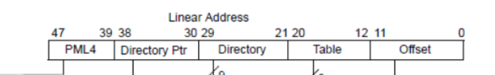
Correspondiendo a offset de las tablas.
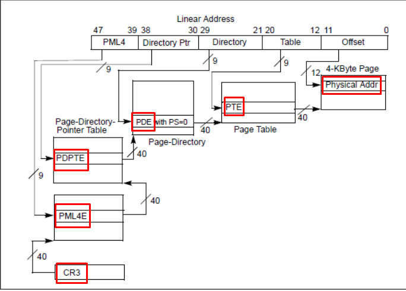
Spliteamos la dirección virtual, pasamos la dirección a binario.
Así que necesitamos splitear los bits de 0 a 11, luego de 12 a 20, luego de 21 a 29, luego de 30 a 38 y de 39 a 47.
Corresponderán a los siguientes offset.
PML4 entre 47 y 39
PDPTE entre 38 y 30
PDE entre 29 y 21
PTE entre 20 y 12
OFFSET entre 11 y 0
Podemos splitear en python solo que hay que poner los índices negativos para que cuente desde el último bit, y sumarle (-1) al primero
bin(a)[-48:-39]
bin(a)[-39:-30]
bin(a)[-30:-21]
bin(a)[-21:-12]
bin(a)[-12:]
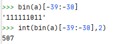
Si a cada comando le aplicamos int(x, 2) nos da el valor decimal directamente de cada offset.
Así que los valores decimales se hallan con.
int(bin(a)[-48:-39],2)
int(bin(a)[-39:-30],2)
int(bin(a)[-30:-21],2)
int(bin(a)[-21:-12],2)
int(bin(a)[-12:],2)
Uso este script de python 3
https://drive.google.com/file/d/1daWTPrwUedneD7768becg8kBhFrj0k0K/view?usp=drivesdk
Por ejemplo tratare de pasar manualmente este dirección virtual 0xffffce0329620080
PML4=0x19c
PDPTE=0xc
PDE=0x14b
PTE=0x20
OFFSET=0x80
Haré un ejemplo para llevarlo a la práctica, por supuesto hay que estar debuggeando kernel, suponemos que tienen configurado el entorno para hacerlo, de esta forma podremos leer los valores necesarios y switchear al contexto del proceso al cual pertenece esa dirección virtual, no explicaremos en detalle eso solo pondremos los comandos.
Listamos los procesos
!process 0 0
.reload /f
Switchearemos al proceso al cual pertenece la dirección virtual a la cual queremos averiguar su dirección física correspondiente, puedo elegir cualquier proceso de la lista, para el ejemplo elijo SKYPE, pueden elegir cualquiera el método es similar.
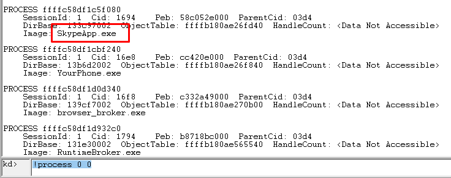
Switcheo al contexto de ese proceso.
.process /i ffffc58df1c5f080
Cuando para, apreto G y ya estare en el contexto verifiquemos.
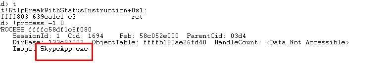
Podemos hacerlo con cualquier dirección válida del proceso, trataremos de buscar la dirección física de la dirección del EPROCESS (podría ser cualquier otra dirección válida)
kd> !process -1 0
PROCESS ffffc58df1c5f080
SessionId: 1 Cid: 1694 Peb: 58c052e000 ParentCid: 03d4
DirBase: 133c97002 ObjectTable: ffffb180ae26fd40 HandleCount: <Data Not Accessible>
Image: SkypeApp.exe
Trataremos de pasar esa dirección virtual ffffc58df1c5f080 a física, veamos su contenido
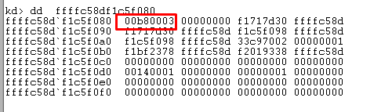
Alli vemos el contenido, lo guardamos para verificar que la dirección física hallada sea la misma, ya que tendrá el mismo contenido.
Bueno empecemos usemos el script para obtener los offset.
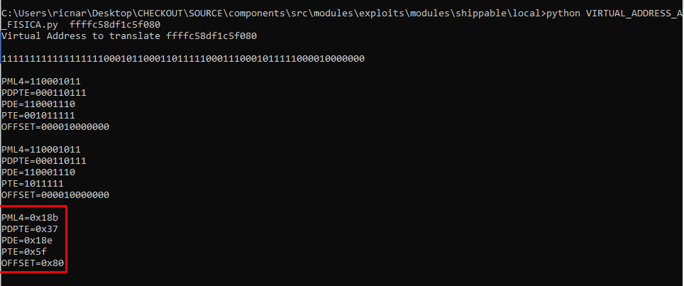
PML4=0x18b
PDPTE=0x37
PDE=0x18e
PTE=0x5f
OFFSET=0x80
Como vemos en la imagen de las tablas todo parte del CR3 que tiene la base de la tabla PML4 o PML4E es lo mismo.
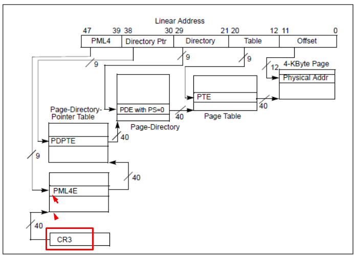
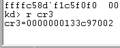
Ese valor de CR3 es el mismo que nos muestra DirBase del proceso donde se encuentra esta dirección virtual (sirve para cualquier dirección virtual de ese proceso)
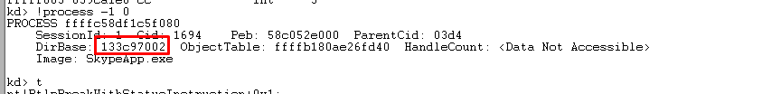
Así que dicha dirección, es la dirección física de la base de la tabla PML4 (les pondre numeral adelante a las direcciones físicas, para diferenciarlas de las direcciones virtuales).
PML4=# 0x133c97002
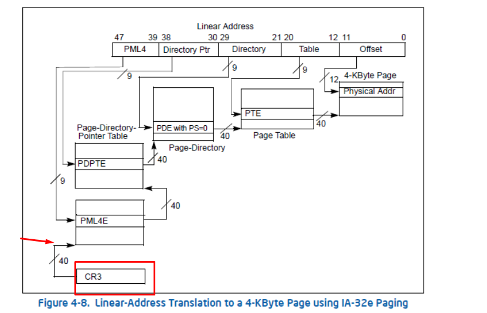
Como vemos estamos en la base de la tabla PML4E para hallar la dirección dentro de la tabla debo usar el offset que en realidad es el número de entrada dentro de la misma, y multiplicarla por 8 ya que cada entrada es un puntero de 8 bytes.
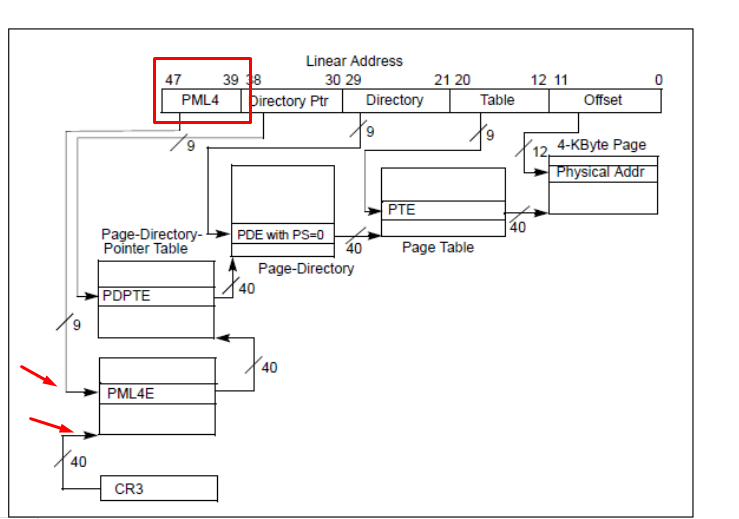
Estamos en la flecha de abajo, con la base de la tabla PML4, queremos llegar a la flecha de arriba que es la dirección cuyo contenido apunta a la siguiente tabla.
Según nos indicó el script sería:
PML4=0x18b
PDPTE=0x37
PDE=0x18e
PTE=0x5f
OFFSET=0x80
Como dijimos para llegar a la dirección, debemos multiplicar por 8 y sumarlo a la base.
BASE + 8 * OFFSET= 0x133c97002 + (0x8 * 0x18b)
hex(0x133c97002 + (0x8 * 0x18b))
'0x133c97c5aL'
Esa es la dirección física dentro de la tabla PML4 en cuyo contenido está el puntero a la otra tabla.
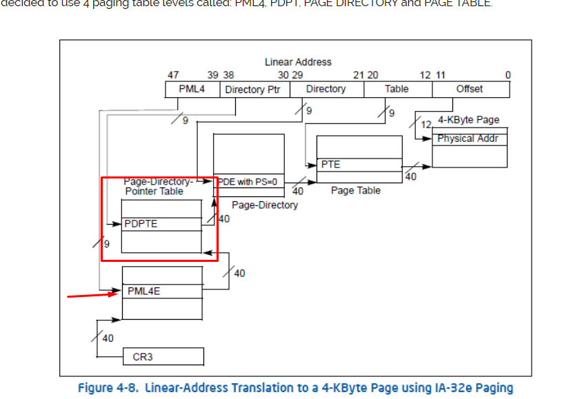
Veamos que hay en esa dirección (para mostrar el contenido de una dirección física en windbg debemos anteponer ! al comando)
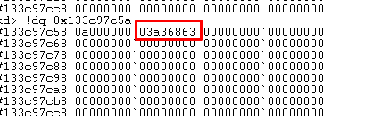
El 0a superior se descarta y #03a36863 es apunta a siguiente tabla, cada vez que hallamos la base de la siguiente tabla con este método debemos poner a 0 los 12 bits inferiores de la dirección que hallamos.
hex(0x03a36863 & 0xFFFFFF000)
'0x3a36000L'
Ahora si, hallamos la dirección física de la base de la siguiente tabla PDPTE.
PDPTE=#0x3a36000
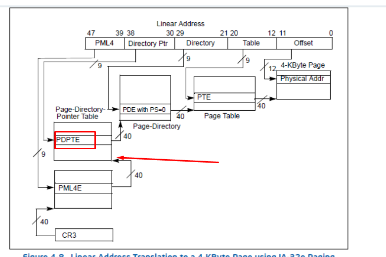
Aplicamos el mismo mecanismo a esa base le sumamos el siguiente offset del script por 8.
PML4=0x18b
PDPTE=0x37
PDE=0x18e
PTE=0x5f
OFFSET=0x80
Así que la dirección dentro de la tabla PDPTE en cuyo contenido está el puntero que apunta a la tabla siguiente sería :
hex(0x3a36000 + (8 * 0x37))
hex(0x3a36000 + (8 * 0x37))
'0x3a361b8'
Esa es la dirección dentro de la tabla PDPTE, veamos su contenido.
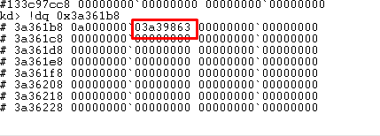
Como la vez anterior el 0a se descarta y le ponemos los 12 bits bajos a cero nos da.
hex(0x03a39863 & 0xFFFFFF000)
'0x3a39000L'
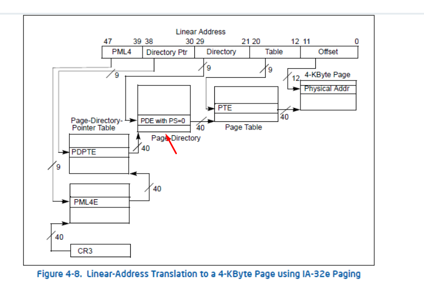
Seguimos escalando ya llegamos a la PDE.
PDE= #0x3a39000
PML4=0x18b
PDPTE=0x37
PDE=0x18e
PTE=0x5f
OFFSET=0x80
Otra vez a la base de la PDE le sumamos 8*0x18e.
hex(0x3a39000 + (8 * 0x18e))
'0x3a39c70'
Veamos el contenido.
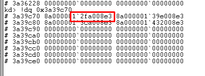
Le quitamos el byte superior y al resto le ponemos a cero los 12 bits inferiores.
hex(0x12fa008e3 & 0xFFFFFF000)
'0x12fa00000L'
Esa es la base de la siguiente tabla PTE
PTE=#0x12fa00000
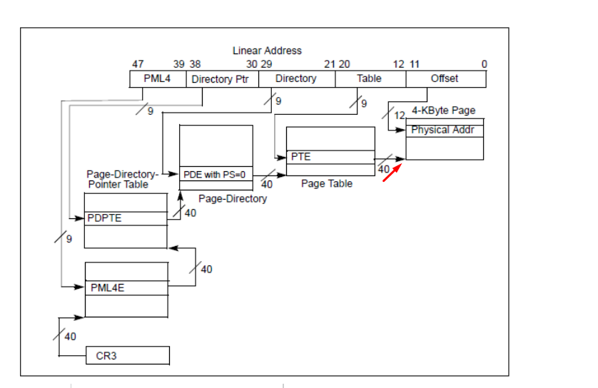
Una vez llegamos a la base de PTE, dicha dirección es la base de la página física de la dirección que busco, solo hay que reemplazar los últimos 5 bytes por los de la dirección original
Virtual address original = ffffc58df1c5f080
Dirección fisica =0x12fa5f080
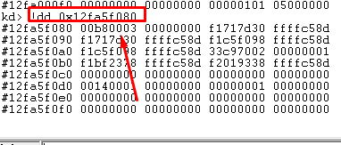
Lo logramos recordemos los que nos mostraba vtop.
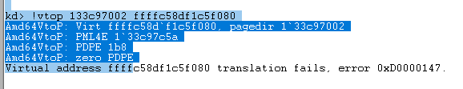
No ayuda mucho veamos !PTE
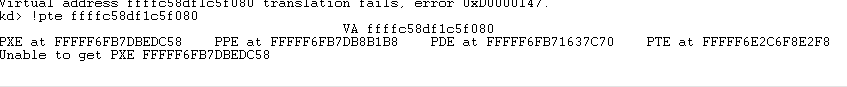
Tampoco
Por eso conocer el método de hallarlo a mano sirve.
Vemos que en realidad después de hallar la base de PTE
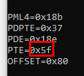
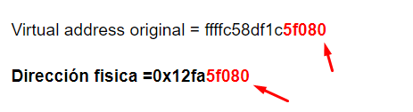
No hay que seguir pivoteando ya teniendo la base de PTE, el 0x5f y 0x80 que nos muestra el script en realidad son los últimos 5 bytes de la dirección que hay que sumarle a la base de PTE para hallar la dirección final.
Algunos compañeros me dijeron que a ellos le funciona con la última versión de WINDBG PREVIEW, pues a mi no.
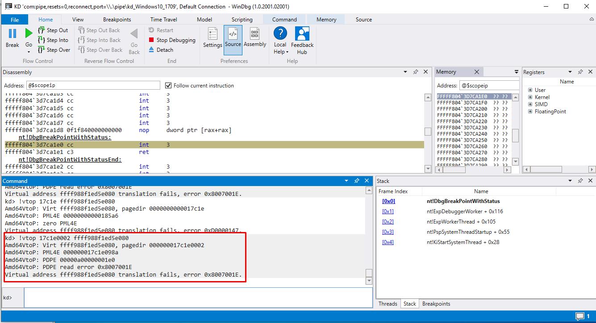
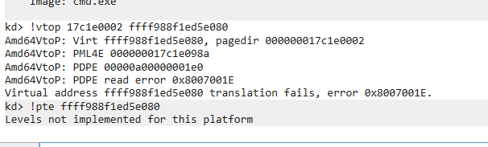
Bueno espero que a alguien le sirva, a mi me sirve porque maniana me olvide de todo así queda escrito jeje y si a alguien le funcionan los comandos de WINDBG mejor, se evita el trabajo, pero igual saber como se hace no viene mal.
9/5/2020
Ricardo Narvaja